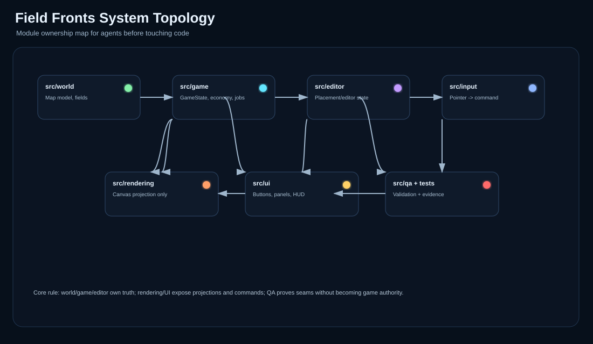
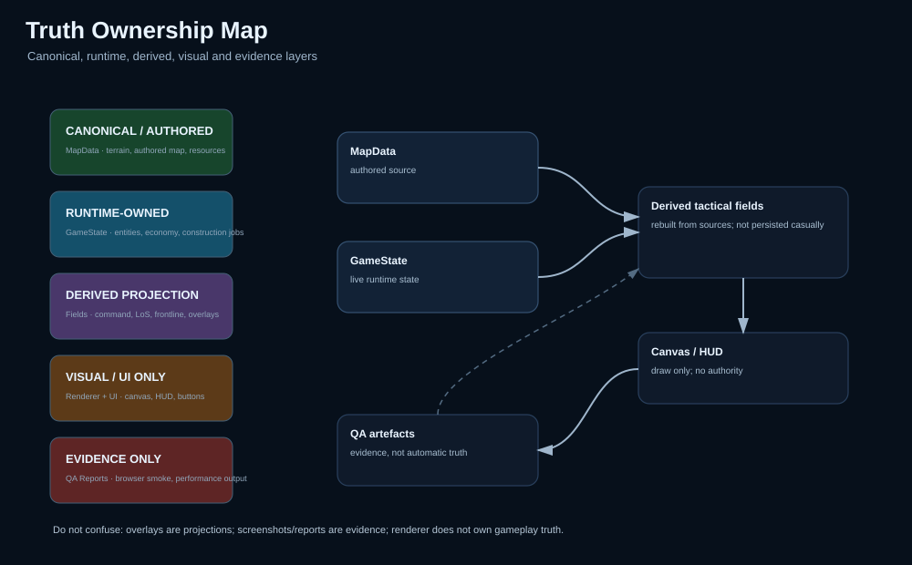
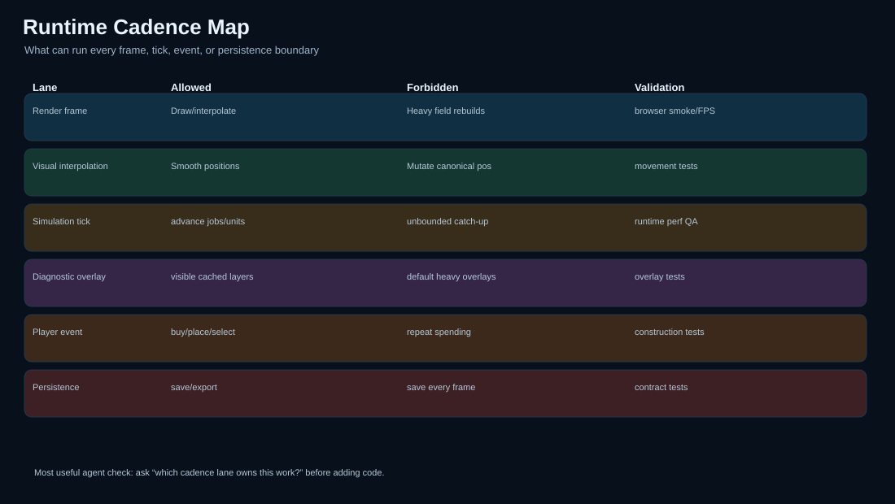
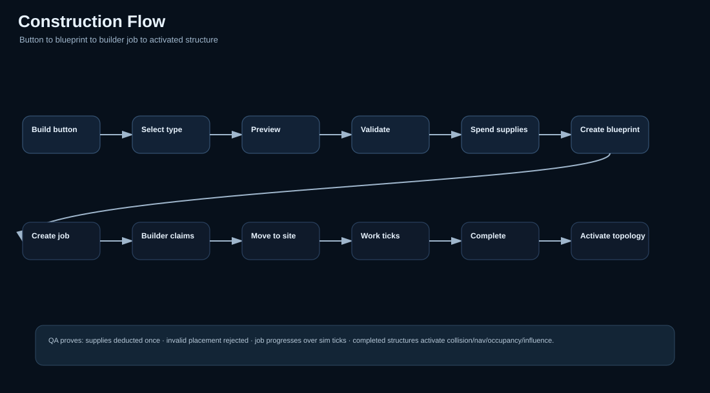
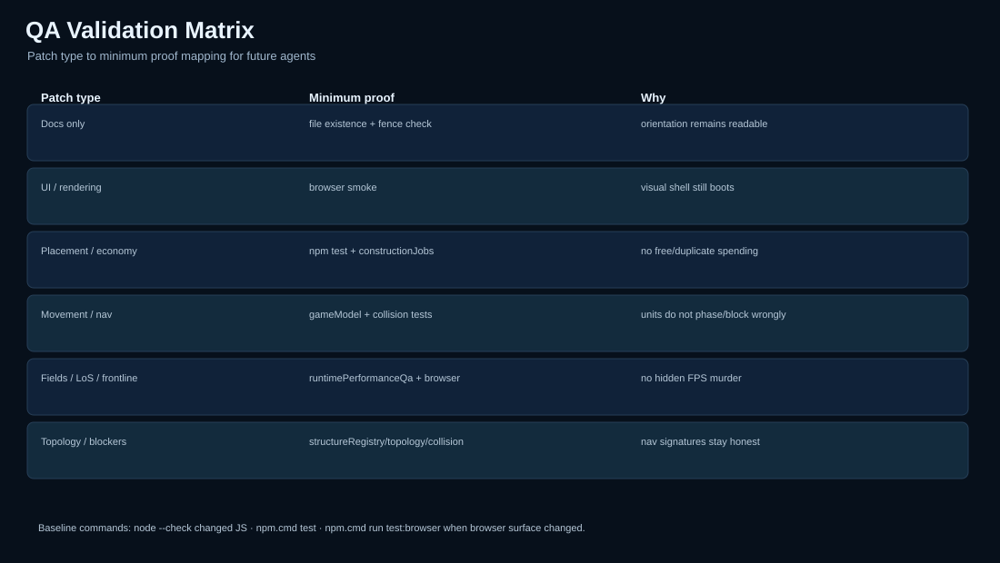
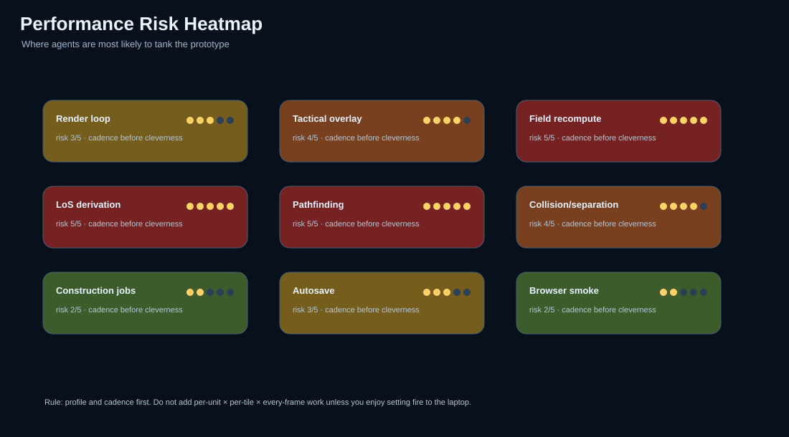

Read first
Use this atlas when you need to orient quickly before patching. It is deliberately blunt: who owns truth, which lane owns runtime work, what tests prove each seam, and where agents are most likely to break performance.
*.mdBest for Codex/AXIOM context injection.
visual-atlas.htmlBest for quick human review.
visuals/*.svgBest for embedding in reports, issues, and future docs.
Do not treat this visual pack as permission to rewrite runtime systems. It exists to make smaller, safer patches easier.
System topology
Module ownership: world/game/editor own truth; input/UI issue commands; rendering projects; QA validates.

Truth ownership
The most important distinction in the project: authored map data, live runtime state, derived fields, visuals, and QA evidence are not the same thing.

Runtime cadence
Before adding work, choose the correct lane. Most bad future patches will be caused by doing heavy logic every render frame.

Construction flow
The intended path from UI button to completed structure. This is the spine for building placement, blueprint visuals, construction jobs, and builder autonomy.

QA validation matrix
Patch type decides proof required. Docs-only patches should not run the whole bloody army, but movement/pathfinding/field changes absolutely need deeper validation.

Performance risk heatmap
Red zones are where “quick clever idea” becomes frame-rate murder. Profile, cadence, cache, and avoid default-heavy overlays.

Next useful action
For a new coding agent: read agent-rules.md, then system-topology.md, then the target-specific file. For a human: open this atlas, scan truth/cadence, then pick a narrow slice from current-next-slices.md.
Best first implementation slice after this pack: construction placement/blueprint UI and construction jobs, with tests proving placement validity, one-time supply spend, job creation, builder claim/progress, and structure activation.